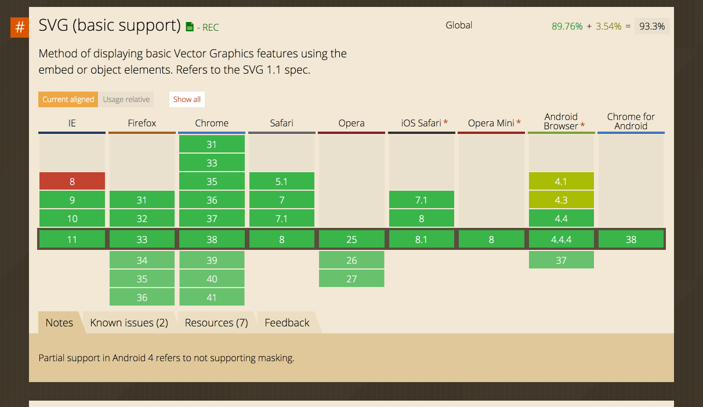
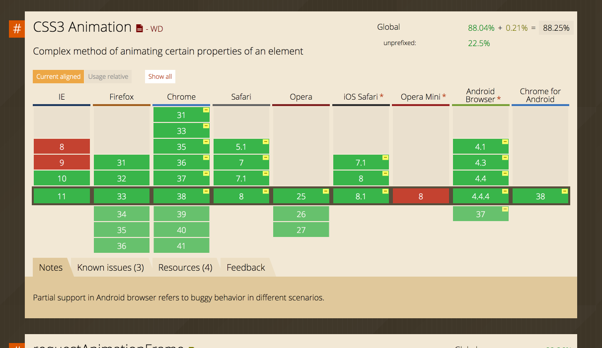
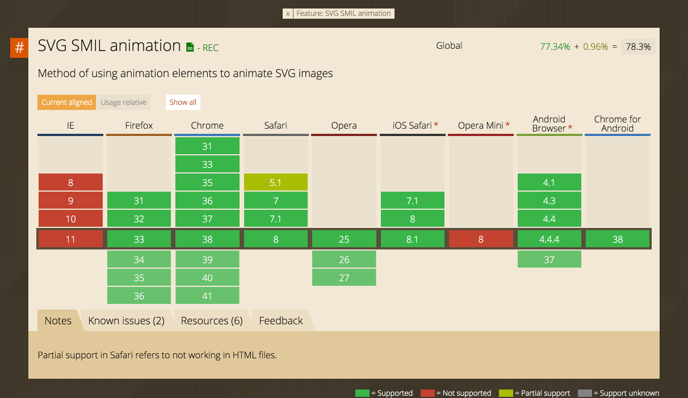

SVG Animations
For Fun and Profit
Table O' Contents
- What is SVG?
- SVG Basics
- JavaScript Helpers: Snap.svg
- But What About SMIL?
- Is This Something I'm Actually Going to Use?
- Resources
So What Is SVG?
Scalable Vector GraphicsThe Main SVG Components
- Lines: Straight Line & Curved (Bézier) Line
- Shapes: Circle, Ellipse, Polygon & Rectangle
Straight Line
Curved Line
Circle/Ellipse
Rectangle/Polygon
See Any Commonalities?
- Fill
- Stroke
- Stroke-Width
- Coordinates (x, y, cx, cy, d)
- Size (width, height, d, radius)
Let's take some of these properties and put them into CSS
.curved{
fill: none;
stroke: green;
stroke-width: 4;
}
But where are the animations?
Stroke Animations
Polygon did some amazing animations with stroke-dasharray and stroke-offset.
JavaScript Libraries
Snap.svg is one of many JS SVG libraries.
Here's a fancy example of Snap.svg in action!
And here's another Snap.svg example.
UI/UX SVG Effects
What about SMIL?
(Synchronized Multimedia Integration Language)Courtesy of Noah Blon
Great, But Can I Actually Use This For A Client?
I Don't Know.
Basic SVG Support for Major Browsers
CSS3 Animation Support for Major Browsers
SMIL Animation Support for Major Browsers
What Can I Use to Make SVG Elements?
Sketch
Inkscape
Your Own Brainmind
And Remember...
...But That's Okay.
Resources
Docs
Articles
- David Walsh's Intro to SVG Animation
- An Interview with Polygon: SVG Animations for Fun and Profit
- Sara Soueidan on SMIL